BikePack
A carrying system that clips onto a folded bike and wears like a backpack. We built it, tested it until the anchors broke, and redesigned the part that failed.
- Role
- All CAD; sewed the full textile assembly
- Team
- Three-person capstone team
- Tools
- Onshape, Bambu X1 Carbon, PETG
- Year
- 2026, engineering academy capstone
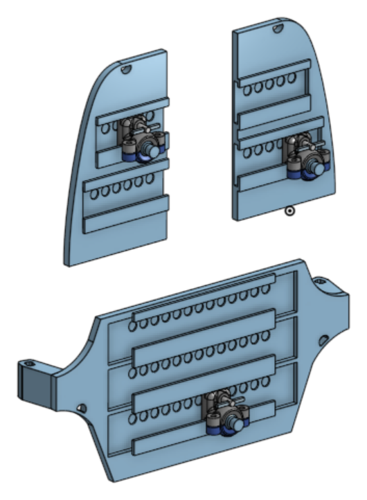
The problem
Most folding bikes weigh 12 to 15 kg, and once folded they are an awkward shape to carry onto a train or up a flight of stairs.
Narrowing the scope
We started out designing a full folding bike and modeled one for our first project expo. After weighing hinge fabrication, budget and our timeline, we narrowed the scope to the carrying system. That cut let us go deep on one problem instead of shallow on many.
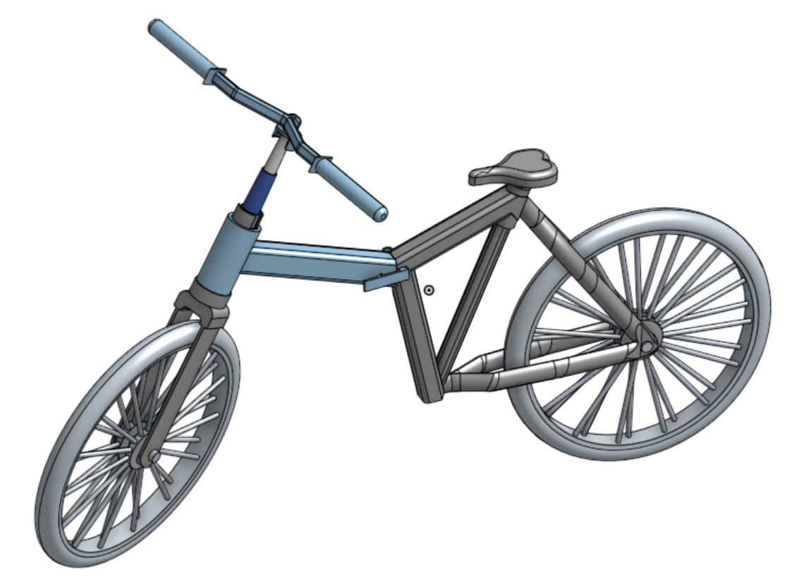
Concept
Before any CAD, the pack was planned layer by layer on paper. The anchors were polyester webbing loops with quick-release buckles, and every pad was specified down to its materials: spacer mesh against the back, EVA foam for cushioning, a PETG plate for stiffness and waterproof nylon facing the bike, all stitched together with nylon upholstery thread. We mapped where the anchors would sit on each bike, starting with the Brompton C-Line Explore.
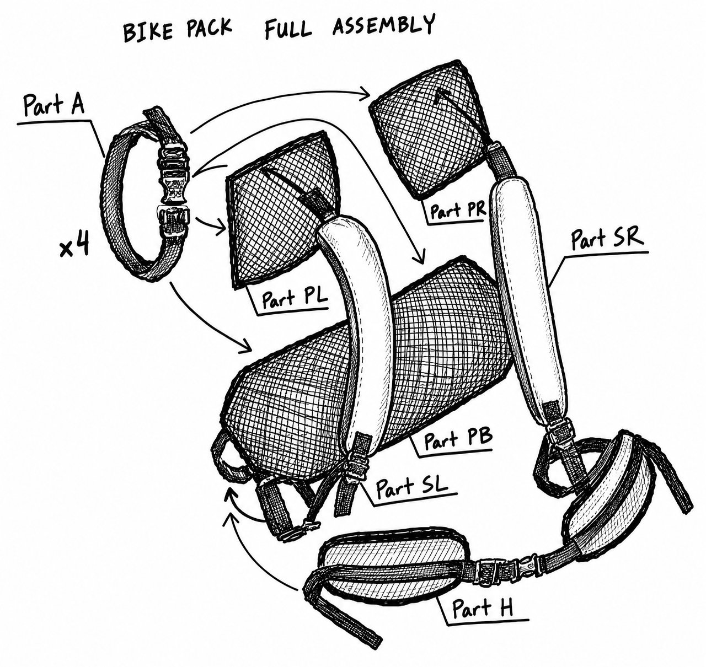
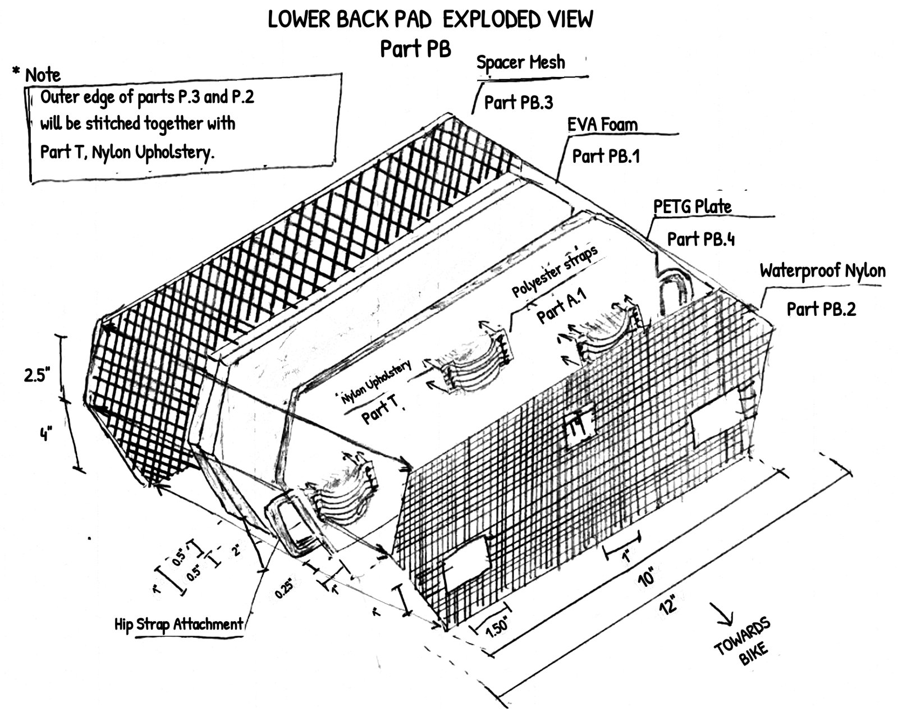
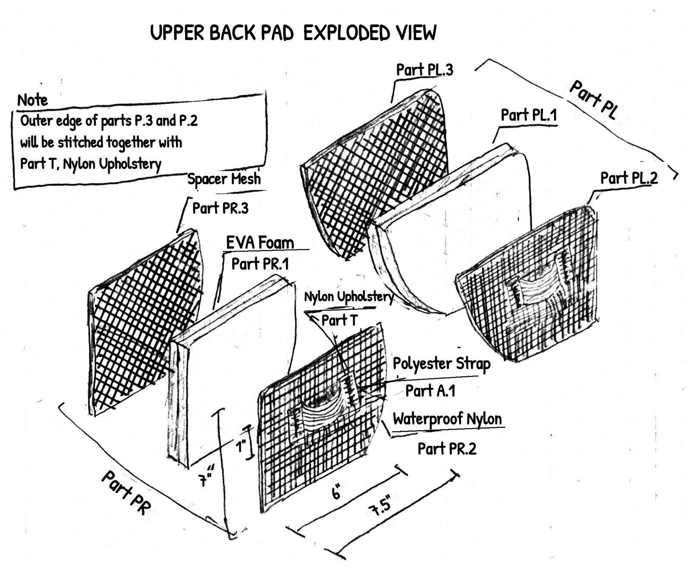
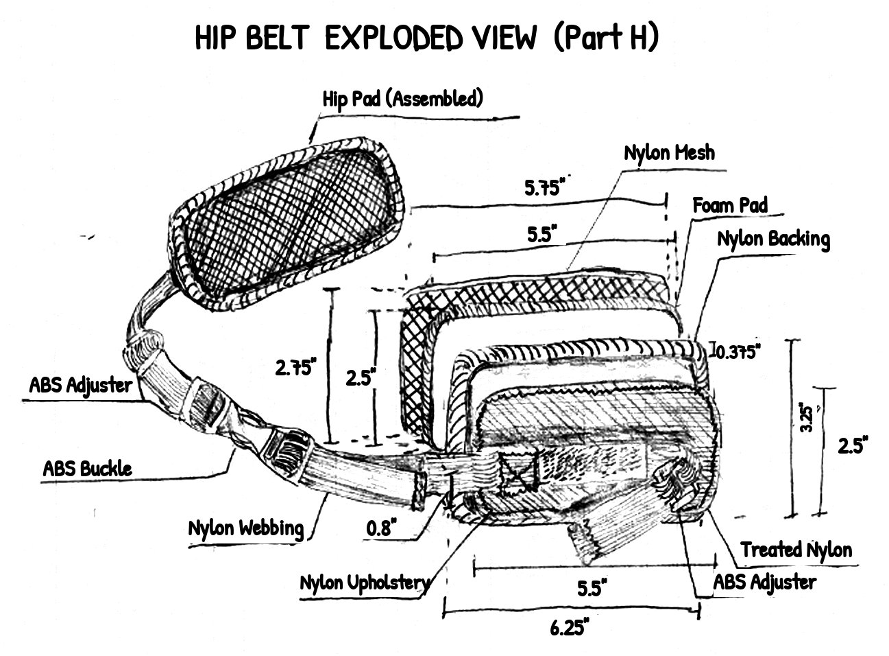
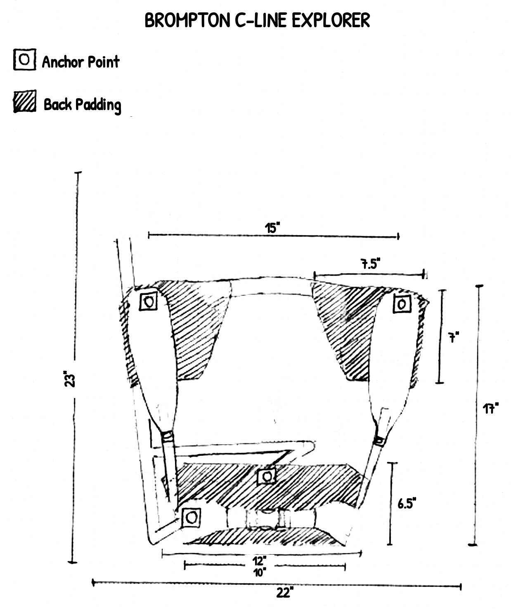
Concept drawings were made on paper; contrast was increased for legibility.
First CAD version
The CAD version replaced the strap loops with printed sliding anchors. Printed PETG back and shoulder plates carry rails of indexed holes. Sliding anchors ride the rails and hold off-the-shelf ball-joint clamps that grip the bike frame, so the anchor positions adjust to both the bike and the wearer. Each anchor held its position with a friction fit: flexible nubs that snapped into the rail holes as it slid.
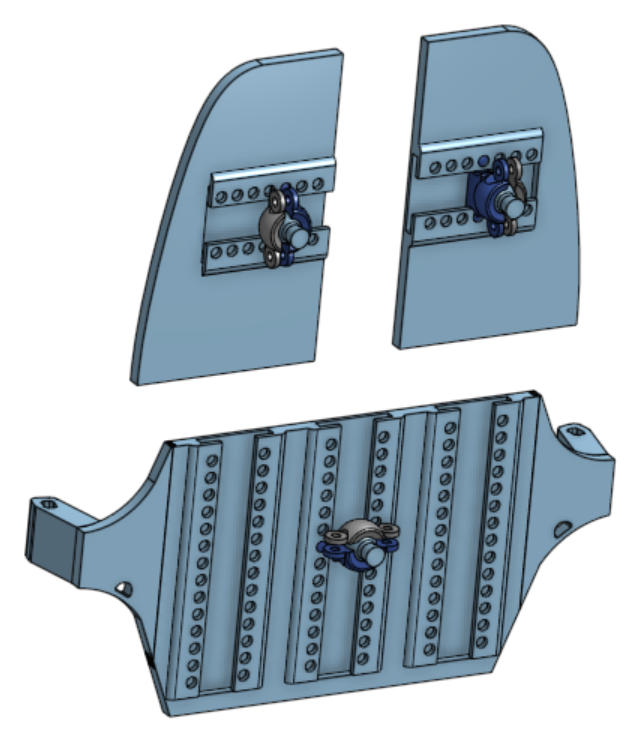
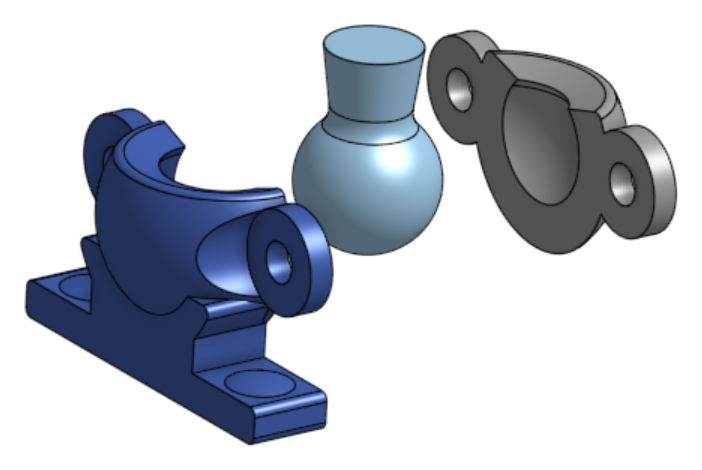
Testing
- Assembly time: 20 people attached the BikePack to a bike in an average of 46.4 seconds, against a 60-second target.
- Adjustability: three wearers from 5'4" to 6'1" averaged 2.67 discomfort points on a scale where 7 is a failure.
- Anchor strength: the anchors held 5, 10 and 15 kg and failed at 20 kg. One plate snapped and released its anchor, and the other anchor broke outright. All tested parts were printed at 100% infill.
Why it failed
The rails ran vertically, so the bike's weight pulled straight along the direction the anchors slide. The same friction fit that made the anchors adjustable let them slip under load, which put the load on the nubs instead of the frame and wore them down every time they passed a hole. The center plate was also slightly too large for the printer, so it was printed in pieces and joined with friction fits, adding another weak point.
Redesign
- Rails turned perpendicular to the load. With horizontal rails, the bike's weight can no longer slide the anchors, and the load goes into the back plate instead of the anchor.
- Spring-loaded locking pin. A spring holds the pin engaged in a rail hole. Pulling the key retracts it, so the anchor slides freely or comes out the end of the rail. It locks positively instead of relying on friction.
- One-piece center plate. Same size as before, printed in one piece on the same printer by orienting it at an unusual angle with a custom support strategy. That removed the weak joints entirely.
The redesign passed the retest on every criterion the first version failed.
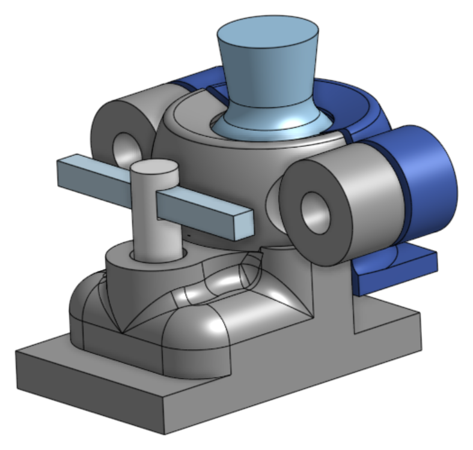
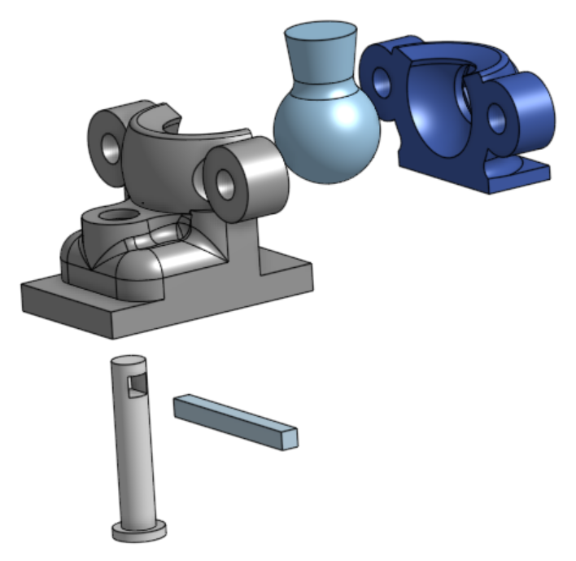
Sewing
The padded straps and covers are sewn over the printed plates. My first pass used single-layer seams with loose edges, which frayed and pulled apart. I re-sewed the assembly with neater lock stitches and whip stitches so it holds up to repeated loading.